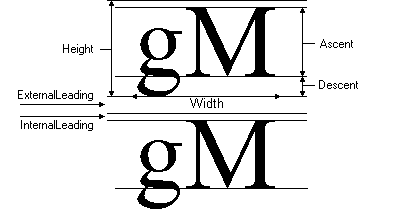
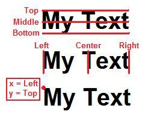
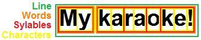

new_table = table.copy(t[, depth])
Copies elements (recursively) of table t into returned table new_table.
depth can limit the number of recursive passes, so value 1 results in a shallow copy.
table_description = table.tostring(t)
Converts table t into readable string table_description (mainly useful for debugging).
range = utf8.charrange(s, i)
Returns byte range of unicode character in string s at position i.
chars_iter = utf8.chars(s)
Creates iterator function through unicode characters of string s.
Every iteration pass returns character index + string or nil on end.
length = utf8.len(s)
Returns unicode characters number of string s.
c0x0, c0y0, c0x1, c0y1, c0x2, c0y2, c0x3, c0y3[, c1x0, c1y0, c1x1, c1y1, c1x2, c1y2, c1x3, c1y3[, c2x0, c2y0, c2x1, c2y1, c2x2, c2y2, c2x3, c2y3[, c3x0, c3y0, c3x1, c3y1, c3x2, c3y2, c3x3, c3y3]]] = math.arc_curve(x, y, cx, cy, angle)
Converts arc data to bezier curves.
x & y is the arc starting point, cx & cy the arc center (= orientation point to keep the same distance to all arc points) and angle the angle in degree of the arc.
For each 90° one curve is generated, so a maximum of 4 curves can span a circle. Curves are 3rd order bezier curves, defined as c<CURVE_INDEX>x|y<POINT_INDEX>.
x, y, z = math.bezier(pct, pts)
Calculates a point on a bezier curve of any order.
pct is the position on the curve in range 0<=x<=1. pts is a table of tables, each one containing 2 or 3 numbers as curve point.
MATRIX = math.create_matrix()
Creates a 3D matrix object (for usage, see following functions).
matrix_fields = MATRIX.get_data()
Returns a table with 16 numbers, presenting all matrix fields.
| 1 | 5 | 9 | 13 |
| 2 | 6 | 10 | 14 |
| 3 | 7 | 11 | 15 |
| 4 | 8 | 12 | 16 |
| x0x1 | y0x1 | z0x1 | w0x1 |
| x0y1 | y0y1 | z0y1 | w0y1 |
| x0z1 | y0z1 | z0z1 | w0z1 |
| x0w1 | y0w1 | z0w1 | w0w1 |
MATRIX = MATRIX.set_data(matrix_fields)
Sets matrix fields. For more, see
MATRIX.get_data.
MATRIX = MATRIX.identity()
Resets matrix to identity.
MATRIX = MATRIX.multiply(matrix_fields)
Multiplies another matrix as table/raw data to this matrix. This way, matrix properties get prepended. For more, see
MATRIX.get_data.
MATRIX = MATRIX.translate(x, y, z)
Applies a translation to the matrix.
MATRIX = MATRIX.scale(x, y, z)
Applies a scale to the matrix.
MATRIX = MATRIX.rotate(axis, angle)
Applies a rotation to the matrix. axis can be "x", "y" or "z", angle is in degree.
[MATRIX] = MATRIX.inverse()
Inverses the matrix. This might fail, so nothing will be returned.
rx, ry, rz, rw = MATRIX.transform(x, y, z[, w])
Multiplies a point with the matrix, returning a new one with all properties of the matrix added.
degree = math.degree(x1, y1, z1, x2, y2, z2)
Calculates the degree between vectors x1|y1|z1 and x2|y2|z3.
length = math.distance(x, y[, z])
Calculates length of given vector.
x, y = math.line_intersect(x0, y0, x1, y1, x2, y2, x3, y3, strict)
Calculates intersection point of two lines.
x0, y0, x1, y1 are both points of line 1, x2, y2, x3, y3 are points of line 2. strict is a flag, determining the intersection has to be located on the lines.
x, y can be the intersection point. If both lines are parallel, x is nil. If strict is true and there's no intersection on the strict length lines, x is inf (1/0).
rx, ry, rz = math.ortho(x1, y1, z1, x2, y2, z2)
Calculates the orthogonal vector to vectors x1|y1|z1 and x2|y2|z3.
r = math.randomsteps(min, max, step)
Generates randomly a number in range min to max with gap size step between numbers.
r = math.round(x[, dec])
Rounds x to nearest integer. Optionally, dec defines the position behind decimal point to round to.
rx, ry, rz = math.stretch(x, y, z, length)
Stretches vector x|y|z to length length.
r = math.trim(x, min, max)
If x is smaller than min, returns min. If x is greater than max, returns max. Otherwise returns x.
frames_iter = algorithm.frames(starts, ends, dur)
Creates iterator function for frames in range starts to ends with step size dur.
For each frame, the start, end, index and number of all frames becomes available.
lines_iter = algorithm.lines(text)
Creates iterator function through lines of text text.
All 3 sorts of line endings (CR, LF, CRLF) will be considered.
x0, y0, x1, y1 = shape.bounding(shape)
Calculates the bounding box of shape shape.
x0|y0 is the upper-left and x1|y1 the lower-right corner of the rectangle.
shapes = shape.detect(width, height, data[, compare_func])
Traces shapes in 2D data.
width and
height defines vector lengths => how to read elements in data table
data.
compare_func can be defined as comparison function, useful for non-flat data elements.
Each entry in returned table
shapes contains following fields:
- value: unique value in data
- shapes: table with shapes (as strings), covering value in data
new_shape = shape.filter(shape, filter)
Filters points of shape shape by function filter and returns a new one.
filter receives point coordinates x and y as well as the point type and have to return 2 numbers, replacing x and y.
flattened_shape = shape.flatten(shape)
Converts all 3rd order bezier curves in shape shape to lines, creating a new shape.
new_shape = shape.glue(src_shape, dst_shape[, transform_callback])
Projects shape src_shape with his bottom on the first figure of shape dst_shape, returned as new shape. src_shape gets stretched to fit on dst_shape.
transform_callback can be defined as callback function, receiving the position on dst_shape in range 0<=x<=1 and the orthogonal offset, having to return the replacement.
new_shape = shape.move(shape, x, y)
Shifts points of shape shape horizontally by x and vertically by y, creating a new shape.
new_shape = shape.split(shape, max_len)
Splits lines of shape shape into shorter ones to fix to maximal line length of max_len, creating a new shape.
outline_shape = shape.to_outline(shape, width_xy[, width_y][, mode])
Converts shape shape from his filling to the stroke with horizontal width width_xy, vertical width width_y and join type mode which can be "round"|"bevel"|"miter", returned as new shape. If width_y isn't defined, width_xy stands for both. Default join type is "round".
pixels = shape.to_pixels(shape)
Renders shape
shape and returns pixels.
pixels is a table of single pixels, each one with following fields:
- x: horizontal position
- y: vertical position
- alpha: opacity in range 0<=x<=255
transformed_shape = shape.transform(shape, MATRIX)
Applies a matrix (see
math.create_matrix) on shape points of
shape, creating a new shape.
ms_ass = ass.convert_time(ass_ms)
Converts time between numeric and ASS presentation.
ass_ms can be a string in ASS format H:MM:SS.XX (H=Hours, M=Minutes, S=Seconds, X=Milliseconds*10) or milliseconds as number.
ms_ass becomes the equivalent of ass_ms.
a_r_ass[, rg, rb[, ra]] = ass.convert_coloralpha(ass_r_a[, g, b[, a]])
Converts color, alpha or color+alpha between numeric and ASS presentation.
ass_r_a can be a string as ASS color (&HFFFFFF&), alpha (&HFF&) or both (&HFFFFFFFF) as well as the color strength of red or alpha in range 0<=x<=255. g is green, b is blue, a is alpha, all color strengths in same range.
a_r_ass[, rg, rb[, ra]] becomes the equivalent of ass_r_a[, g, b[, a]].
coloralpha = ass.interpolate_coloralpha(pct, ...)
Interpolates between multiple ASS color, alpha or color+alpha ... and calculates the value at position pct with range 0<=x<=1.
PARSER = ass.create_parser([ass_text])
Creates an ASS parser object (for usage, see following functions). ass_text can be an ASS script/text to be parsed.
accepted = PARSER.parse_line(line)
Parses text line line to add ASS data to the parser object.
If the line was valid and data added, accepted is true, otherwise false.
meta = PARSER.meta()
Returns ASS meta data as table with following fields:
- wrap_style: text line wrapping mode as number
- scaled_border_and_shadow: borders and shadows should be implicated in script-to-frame scale?
- play_res_x: script horizontal resolution
- play_res_y: script vertical resolution
styles = PARSER.styles()
Returns ASS styles as table. Table keys are style names, values are tables with following fields:
- fontname: font face name
- fontsize: font size
- bold: bold weight?
- italic: italic style?
- underline: underline decoration?
- strikeout: strikeout decoration?
- scale_x: horizontal scale in percent
- scale_y: vertical scale in percent
- spacing: intercharacter spacing
- angle: z-axis rotation angle
- border_style: border is an outline box?
- outline: outline width
- shadow: shadow distance right-down
- alignment: object alignment on screen (see keypad)
- margin_l: margin from left screen border
- margin_r: margin from right screen border
- margin_v: margin from vertical screen borders
- encoding: codepage to interpret text
dialogs = PARSER.dialogs([extended])
Returns ASS dialogs as table. Each entry is a table with following fields:
- comment: dialog is comment?
- layer: dialog layer number
- start_time: dialog start time in milliseconds
- end_time: dialog end time in milliseconds
- style: dialog style name
- actor: dialog actor name
- margin_l: dialog margin to left edge
- margin_r: dialog margin to right
- margin_v: dialog margin to horizontal edges
- effect: dialog effect description
- text: dialog text
If
extended is true, following additional fields are added:
- i: dialog index
- duration: dialog duration in milliseconds
- mid_time: dialog mid time in milliseconds
- styleref: reference to dialog related style table
- text_stripped: dialog text without tags
- width: dialog width
- height: dialog height
- ascent: dialog font ascent
- descent: dialog font descent
- internal_leading: dialog font internal leading
- external_leading: dialog font external leading
- left: dialog left position
- center: dialog center position
- right: dialog right position
- x: dialog horizontal position by alignment
- top: dialog top position
- middle: dialog middle position
- bottom: dialog bottom positon
- y: dialog vertical position by alignment
- text_chunked: raw text in tag+text chunks with followings fields:
- tags: content between brackets {} in front of text
- text: text after brackets{}
- syls: raw text in sylable chunks with following fields:
- i: sylable index
- start_time: sylable start time in milliseconds
- mid_time: sylable mid time in milliseconds
- end_time: sylable end time in milliseconds
- duration: sylable duration in milliseconds
- tags: sylable tags beside her duration definition
- text: sylable text
- prespace: sylable spaces number in front
- postspace: sylable spaces number behind
- width: sylable width
- height: sylable height
- ascent: sylable font ascent
- descent: sylable font descent
- internal_leading: sylable font internal leading
- external_leading: sylable font external leading
- left: sylable left position
- center: sylable center position
- right: sylable right position
- x: sylable horizontal position by alignment
- top: sylable top position
- middle: sylable middle position
- bottom: sylable bottom position
- y: sylable vertical position by alignment
- words: raw text in word chunks with following fields:
- i: word index
- start_time: word start time in milliseconds
- mid_time: word mid time in milliseconds
- end_time: word end time in milliseconds
- duration: word duration in milliseconds
- text: word text
- prespace: word spaces number in front
- postspace: word spaces number behind
- width: word width
- height: word height
- ascent: word font ascent
- descent: word font descent
- internal_leading: word font internal leading
- external_leading: word font external leading
- left: word left position
- center: word center position
- right: word right position
- x: word horizontal position by alignment
- top: word top position
- middle: word middle position
- bottom: word bottom position
- y: word vertical position by alignment
- chars: raw text in character chunks with followings fields:
- i: character index
- start_time: character start time in milliseconds
- mid_time: character mid time in milliseconds
- end_time: character end time in milliseconds
- duration: character duration in milliseconds
- text: character text
- syl_i: index of sylable which contains the character
- word_i: index of word which contains the character
- width: character width
- height: character height
- ascent: character font ascent
- descent: character font descent
- internal_leading: character font internal leading
- external_leading: character font external leading
- left: character left position
- center: character center position
- right: character right position
- x: character horizontal position by alignment
- top: character top position
- middle: character middle position
- bottom: character bottom position
- y: character vertical position by alignment
- leadin: dialog pretime / duration from last dialog to this one (in case there's none, it's 1000.1)
- leadout: dialog posttime / duration from this dialog to next one (in case there's none, it's 1000.1)
Some additional informations to calculated values:

BMP_READER = decode.create_bmp_reader(filename)
Creates a bitmap reader object (for usage, see following functions). Decodes Windows Bitmap (or PNG) file filename.
file_size = BMP_READER.file_size()
Returns bitmap file size in bytes.
width = BMP_READER.width()
Returns bitmap width.
height = BMP_READER.height()
Returns bitmap height.
bit_depth = BMP_READER.bit_depth()
Returns bitmap bit depth.
data_size = BMP_READER.data_size()
Returns bitmap image data size in bytes.
row_size = BMP_READER.row_size()
Returns bitmap image data row size in bytes.
is_bottom_up = BMP_READER.bottom_up()
Returns whether bitmap rows are to read bottom-up (instead top-down).
data_raw = BMP_READER.data_raw()
Returns bitmap image data bytes as string.
data_packed = BMP_READER.data_packed()
Returns bitmap image data packed in a table. Each entry is a pixel table with following fields:
- r: red channel strength in range 0<=x<=255
- g: green channel strength in range 0<=x<=255
- b: blue channel strength in range 0<=x<=255
- a: alpha channel strength in range 0<=x<=255
data_ass_text = BMP_READER.data_text()
Returns bitmap image data as ASS text. This text is optimized for small length.
WAV_READER = decode.create_wav_reader(filename)
Creates an audio wave reader object (for usage, see following functions). Decodes wave file filename.
file_size = WAV_READER.file_size()
Returns wave file size in bytes.
channels = WAV_READER.channels_number()
Returns number of audio channels.
sample_rate = WAV_READER.sample_rate()
Returns audio sample rate / samples per second per channel.
byte_rate = WAV_READER.byte_rate()
Returns wave byte rate / bytes per second.
block_align = WAV_READER.block_align()
Returns wave data block size in bytes (byte depth * number of channels).
bits_per_sample = WAV_READER.bits_per_sample()
Returns audio sample bit depth / byte size (/8) of one sample.
samples_number = WAV_READER.samples_per_channel()
Returns audio samples number per channel.
min_amplitude, max_amplitude = WAV_READER.min_max_amplitude()
Returns minimal and miximal possible value of audio samples.
sample = WAV_READER.sample_from_ms(ms)
Returns sample index at time ms in milliseconds.
ms = WAV_READER.ms_from_sample(sample)
Returns time in milliseconds at sample index sample.
position = WAV_READER.position([pos])
Sets and returns current position (= sample index) of samples stream.
samples = WAV_READER.samples_interlaced(n)
Reads n samples from wave data stream and returns them as entries of table samples.
Samples get read raw, so still interlaced.
FREQ_ANALYZER = decode.create_frequency_analyzer(samples, sample_rate)
Creates a frequency analyzer object (for usage, see following functions). Analyzes frequencies of audio samples
samples with sample rate
sample_rate with
FFT.
frequencies = FREQ_ANALYZER.frequencies()
Returns frequencies in range 0<=x<=
sample_rate/2 as table. Each entry has following fields:
- freq: frequency value
- weight: weight of this frequency in sum of all
weight = FREQ_ANALYZER.frequency_weight(freq)
Returns weight of frequency freq in sum of all. If this frequency isn't available, interpolates the value from the neighbours.
weight = FREQ_ANALYZER.frequency_range_weight(freq_min, freq_max)
Calculates weight of frequencies in range freq_min to freq_max.
FONT_HANDLE = decode.create_font(family, bold, italic, underline, strikeout, size[, xscale][, yscale][, hspace])
Creates a font object (for usage, see following functions).
family is the font family.
If bold is true, font has bold weight.
If italic is true, font has italic style.
If underline is true, font has underline decoration.
If strikeout is true, font has strikeout decoration.
size is the font size.
xscale and yscale can define horizontal & vertical scale.
hspace can define intercharacter space.
metrics = FONT_HANDLE.metrics()
Returns font metrics as table with followings fields:
- ascent: font ascent
- descent: font descent
- internal_leading: font internal leading
- external_leading: font external leading
- height: font maximal height
extents = FONT_HANDLE.text_extents(text)
Returns extents of text with given font as table with followings fields:
- width: text width
- height: text height
shape = FONT_HANDLE.text_to_shape(text)
Converts text with given font to an ASS shape.
fonts_list = decode.list_fonts([with_filenames])
Returns a list of system installed fonts.
fonts_list is a table, each entry one font. Fonts contain following fields:
- name: short fontname
- longname: full fontname
- style: font style
- type: font storage type
- file: font file (with_filenames must be true; successfull extraction isn't ensured)